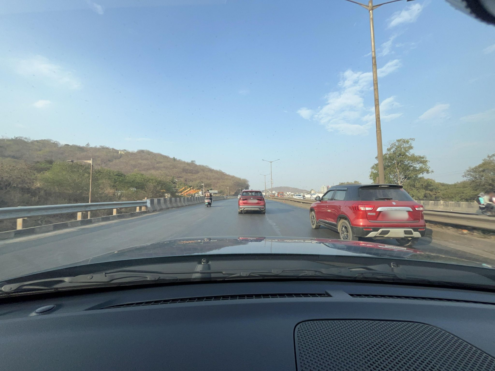
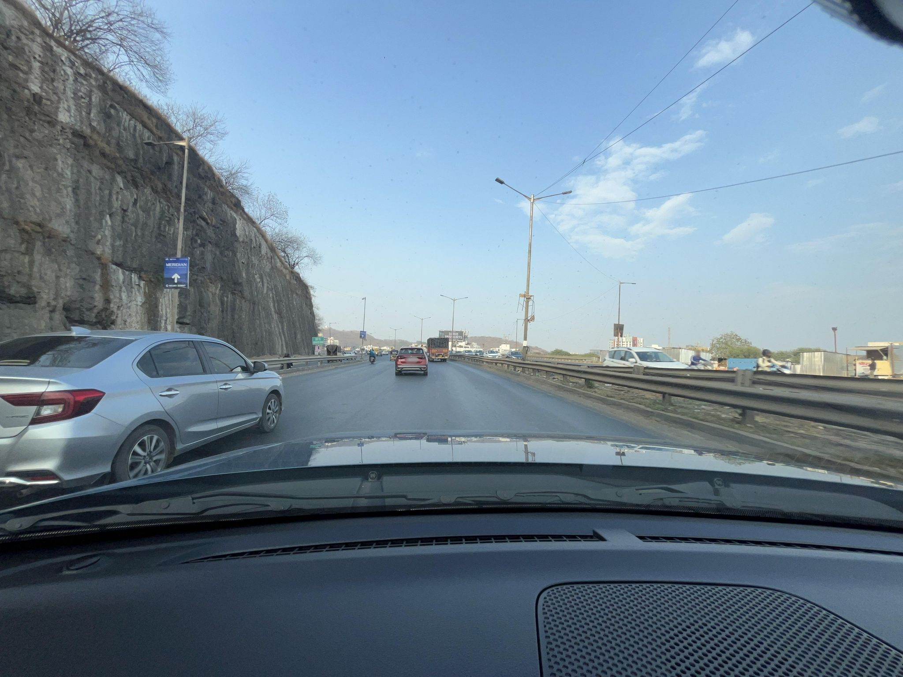
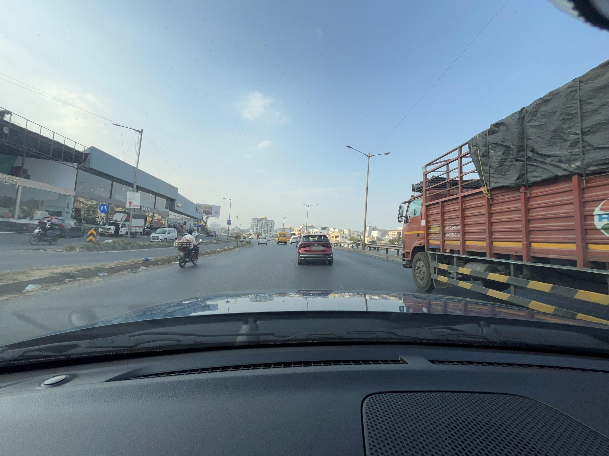

No clear target observed
865803459579288
Windscreen dashcam on a divided highway flyover; bonnet and dashboard fill the lower third. Visible carriageway, barrier and hillside verge show no roadside dump or overflowing bin.
GEOCLEAN AI · MAPILLARY STREET-LEVEL METHOD V2
Three distributed frames from the only recent sequence were checked as a supplement. All are windscreen dashcam views of the divided highway at the west edge of the rectangle, with the dashboard covering about a third of each frame. One shows no target; two show sparse litter below the roadside-dump threshold. No overflowing bin is visible.
These are preliminary review notes, not training labels or model predictions.

Windscreen dashcam on a divided highway flyover; bonnet and dashboard fill the lower third. Visible carriageway, barrier and hillside verge show no roadside dump or overflowing bin.

Sparse litter lies on the unpaved verge beyond the right guardrail near roadside sheds; no concentrated dump or bin is visible. Dashboard covers the lower third.

Loose wrappers and small debris are dispersed along the median beside the service road; the material is below the roadside-dump threshold and no bin is visible.